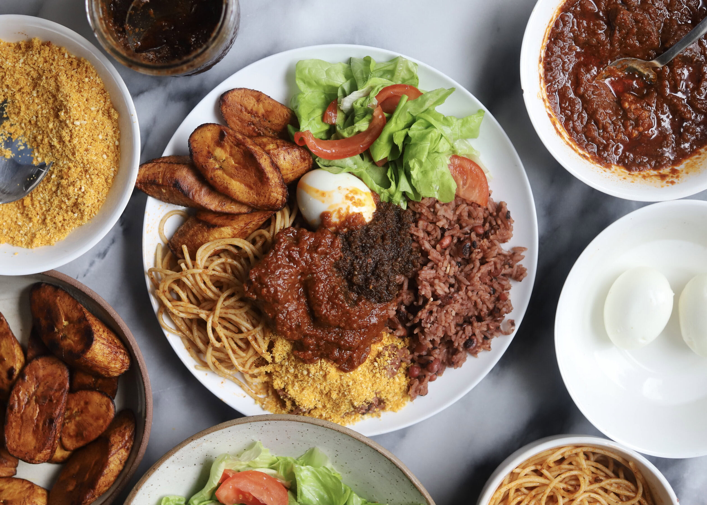

Waakye

A classic plate of hot Ghanaian waakye
Ghanaian waakye is a beloved, deeply satisfying street food and breakfast staple. It consists of rice and beans cooked together with dried millet stalk leaves, which give the dish its iconic, deep reddish-brown color and a subtle earthy flavor. Best enjoyed wrapped in a broad leaf, it is the ultimate comfort food that brings people together at local roadside joints every morning.
Ingredients
- 2 cups of white rice
- 1 cup of black-eyed beans
- 10-15 dry millet stalk leaves (waakye leaves)
- Water
- Salt (to taste)
Steps
- Wash the black-eyed beans thoroughly and soak them in water overnight (or for at least 3 to 4 hours) to cut down on cooking time.
- In a large pot, add the soaked beans, the rinsed millet stalk leaves, and enough water to cover them. Bring to a boil on medium-high heat until the beans begin to soften and the water turns a deep wine-red color.
- Wash the rice thoroughly until the water runs clear, then add it to the pot with the boiling beans and millet stalks. Add more warm water if needed so the rice can cook properly.
- Season with salt to taste, stir gently to combine, and cover the pot tightly. Cook on medium-low heat for 20 to 25 minutes, allowing the rice to absorb all the rich color and flavor.
- Once the rice and beans are perfectly tender, remove the millet stalk leaves from the pot.
- Serve hot with a side of shito (black pepper sauce), tomato stew, hard-boiled eggs, fried plantain, spaghetti (talia), and gari foto!